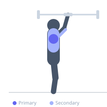
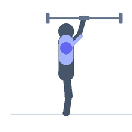

Exercise guide / Plate-Loaded Viking Press
Plate-Loaded Viking Press
The plate-loaded Viking press uses a Viking press machine or landmine-based Viking press attachment, which allows the hands to press in a neutral (palms-facing) grip along a fixed arc from shoulder height to full overhead extension. The arcing path of the handles closely approximates the natural pressing pathway of a dumbbell press while allowing barbell-style loading plates, making it a shoulder-friendly alternative to the straight barbell overhead press with the loading capacity of a barbell movement.
Primary muscles
deltoid anterior
deltoid lateral
Secondary muscles
triceps brachii
trapezius upper
Stabilizers
erector spinae
transverse abdominis
Equipment
Hyperextension Bench (45°)


Starting position
- Grip the Viking press handles with a neutral grip at shoulder height. Feet shoulder-width apart, standing in front of the machine or landmine anchor.
Setup
- Load weight plates onto the Viking press arms evenly. Begin with moderate loads as the pressing arc is different from a straight barbell.
Steps
- Step 1: Begin with the handles at shoulder height, elbows bent.
- Step 2: Press both handles upward and slightly forward, following the arc of the machine.
- Step 3: Extend to full overhead lockout.
- Step 4: Lower under control along the same arc.
- Step 5: Repeat.
Coaching cues
- Follow the arc — don't fight it
- Neutral grip throughout
- Full lockout at the top
Breathing
- Inhale and brace before pressing. Exhale through the press.
Range of motion
- Shoulder height to full overhead lockout along the machine's arc.
Tempo
- 2-1-2-0
Common mistakes
- Fighting the arc — the fixed bar path is an advantage; follow it rather than trying to press straight
- Locking the elbows aggressively — control the lockout
Safety
- The arcing pressing path is gentler on the shoulder than a straight barbell
- Still requires adequate shoulder mobility for overhead pressing
Training
- strength: 3–8 reps
- hypertrophy: 8–15 reps
- strength: 3–5 sets
- hypertrophy: 3–4 sets
- Rest: {'strength': 240, 'hypertrophy': 90}